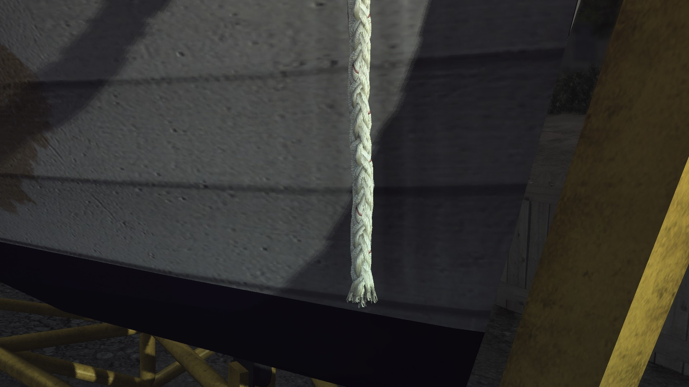

This will be a little different than normal.
Out of the briefing, go around the stairs but only go down a couple of stairs. You want to be far enough from the briefing room but close enough to Galloway to trigger this dialogue line between Cole and Rusty. Once you hear Cole say “A fine morning indeed…,” go down the stairs and do the camera trick but don’t get in the car yet
When Cole says, “ Greetings from sunny california…,” get in and have Galloway drive you to the scene.
Skip the arrival cutscene, and skip the one cutscene after Mal’s comment about triple braid rope.
Then walk to the right and investigate the footprints, this is hard to get at first and Cole might gravitate towards the wad of cash. Turn around to investigate the tire tracks.
After those two clues, jog over to the yellow barrier to trigger a cutscene. Skip it and you will be interrogating Catherine Barton who thinks she may have useful information.
After speaking with her, head to the gamewell on the utility pole just southeast of Cole’s position. This is a pretty long call so you can take a breather, as if there wasn’t enough of those.
Once finished, have Galloway drive you to the hobo camp.
Upon reaching the hobo camp, skip the cutscene and immediately hold sprint, right, and the enter vehicle button. Immediately have Galloway to 43 Emerald Street which should be the very last location on your notebook.
Skip the cutscene upon arrival. Instead of heading for the door, immediately turn right, go in between the tree and the ladder to investigate the illuminated bow line of the boat that seems to have been cut off.
Then turn around and knock on the front door. A cutscene will start to play between Cole and Lars Taraldsen, but once the camera angle changes to a shot from inside the house, you can skip it.
Skipping the cutscene allows you to then move in front of the chair near where you spawn. Once Galloway says, “...nothing to hide,” you can press square, X, or space to question Lars Taraldsen.
Once done with the interrogation, wait outside the stairs of the front foyer of the house until Galloway starts talking to you. Sit in the driver's seat of the car until a radio call comes in.
As Galloway answers the radio, get out of the car, marker to the hobo camp with the notebook, and once KGPL says to “use caution,” have Galloway drive you to the hobo camp.
Skip the opening cutscene and engage in a fight with the tall hobo. Beating him up will initiate another cutscene
Skip the cutscene after Ackerman’s line about fighting against the Japanese.
Go into his little shack and go to the far left corner to reveal the bloody rope, investigate by holding right. Turn 180 to inspect the purse, investigate further to inspect the Crystal Ballroom ticket.
Get out of that shack and backtrack your way to the entrance and have Galloway drive you to Central Station.
The cutscene usually starts with you getting out of the car, if that’s the case, go through the double and turn left and around the corner to go in to Interview Room 1.
If you’re seeing Cole and Finbarr walking alongside the station, you’ll just have to head left to go through the open double doors.